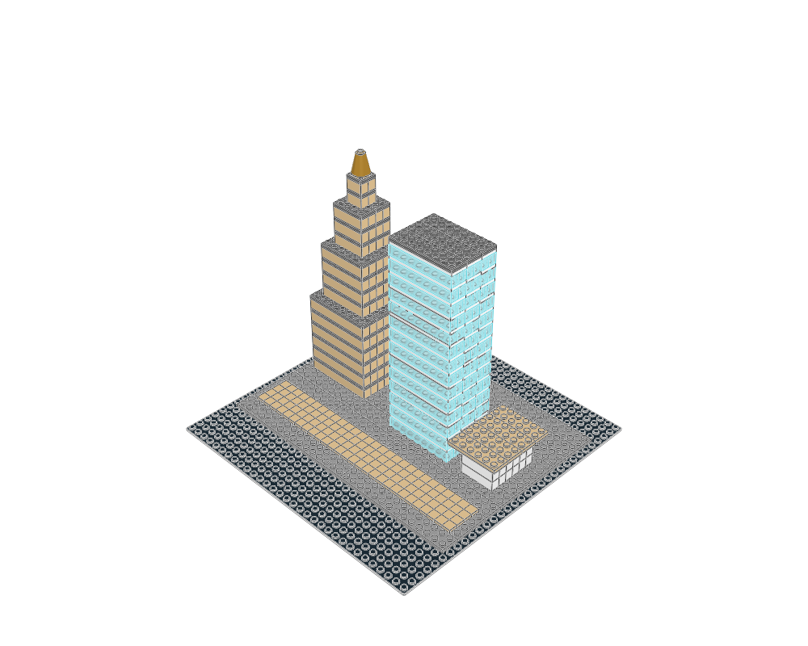

building construction lessons
Generated from package READMEs. Inspiration, held, diagnostic and retired sources require explicit knowledge search scopes.
Low parapet and merlons on a connected rectangular 8-by-10-stud deck. The footprint is not square; preserve supporting surfaces and avoid a whole-tower or strength claim.
Static visual evidence only unless the linked package records specific further checks. Search eligibility does not certify fit, motion or strength.
Simple translucent cylindrical light on square foot as fitting snippet. Functional industrial lighting means visual role, not an operating light.
Static visual evidence only unless the linked package records specific further checks. Search eligibility does not certify fit, motion or strength.
Banded round stack on square plinth as fitting snippet. Avoid general industrial-building style claims.
Static visual evidence only unless the linked package records specific further checks. Search eligibility does not certify fit, motion or strength.
Printed clock-brick fitting on plate. Two-piece snippet, not separate architectural construction lesson.
Static visual evidence only unless the linked package records specific further checks. Search eligibility does not certify fit, motion or strength.
Full-height fixed frame/glazing fitting; share one authored recipe with wall-shell lesson and parameterize colour.
Static visual evidence only unless the linked package records specific further checks. Search eligibility does not certify fit, motion or strength.
Simple two-post rail as fitting snippet, not a rich fence design template. Cottage shows the corresponding white variant at site boundary.
Static visual evidence only unless the linked package records specific further checks. Search eligibility does not certify fit, motion or strength.
Small fitting snippet: four flowers on round stems behind simple planter frontage. Not a broad botanical/landscaping example; colour variants are parameters, not separate lessons.
Static visual evidence only unless the linked package records specific further checks. Search eligibility does not certify fit, motion or strength.
Frame/door fitting in closed pose; compatible green variant shown in conservatory shell. No checked door swing.
Static visual evidence only unless the linked package records specific further checks. Search eligibility does not certify fit, motion or strength.
Supported four-post porch with separate floor and tiled canopy, demonstrated at cottage entrance. Preserve doorway/approach width and supporting stud surfaces.
Static visual evidence only unless the linked package records specific further checks. Search eligibility does not certify fit, motion or strength.
Horizontal printed-panel rack with real supports as small static equipment lesson. No articulated tilt/tracking claim.
Static visual evidence only unless the linked package records specific further checks. Search eligibility does not certify fit, motion or strength.
Compact plate-built steps with three one-plate rises and supported landing. Reserve exact landing height and approach.
Static visual evidence only unless the linked package records specific further checks. Search eligibility does not certify fit, motion or strength.
Frame/pane fitting with required opening dimensions, demonstrated in cottage shell. Preserve source parts and fit limitations.
Static visual evidence only unless the linked package records specific further checks. Search eligibility does not certify fit, motion or strength.
Basic supported gable roof with decorative dormer and tiled ridge; link to its cottage use instead of duplicating prose. Underside is a continuous plate deck; do not claim hollow loft or usable upper room.
Static visual evidence only unless the linked package records specific further checks. Search eligibility does not certify fit, motion or strength.

Microscale massing with a stepped tan tower, glazed slab tower and low pavilion on one plinth. Two towers and one pavilion, not three towers; do not transfer its proportions to minifigure-scale buildings.
Static visual evidence only unless the linked package records specific further checks. Search eligibility does not certify fit, motion or strength.